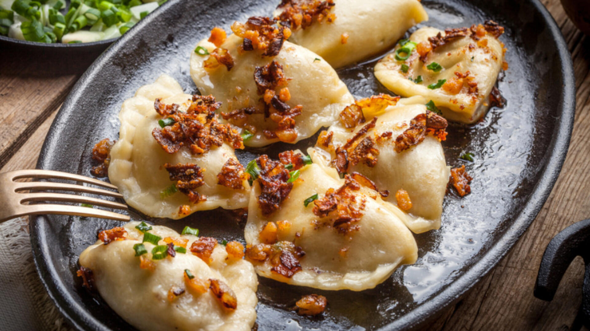

🏠 Home
Meat pierogi

Description:
Meat Pierogi - traditional Polish dumplings made from soft dough filled with a savory meat filling. The filling is typically made from ground meat, onions, and spices. The pierogi are either boiled or pan-fried and are perfect as a main dish or snack.
Ingredients:
-
Filling:
- 500 g of cooked meat from broth
- Cooked vegetables from soup (1 carrot, 1/2 parsley root)
- 1 onion
- 1 tablespoon of oil
-
Dough:
- 600 g of all-purpose flour
- 2 pinches of salt
- 250 ml of boiling water
- 2 eggs
- 40 g of butter or oil
Steps:
-
Filling:
- Remove the meat from the broth off the bones. Use poultry meat without the skin, and beef with the fat.
- Peel the onion and dice it finely. Sauté it in oil until translucent.
- Grind the meat, sautéed onion, and vegetables from the broth (1 carrot and 1/2 parsley root) through a meat grinder (using a coarse setting). Then, knead the mixture thoroughly by hand and season with salt and pepper to taste.
-
Dough:
- Pour the flour into a bowl and add a pinch of salt. Add butter to the boiling water and let it melt, or pour in the oil. Gradually pour the mixture into the flour, stirring with a spoon. Meanwhile, add the beaten egg and combine all the ingredients to form a smooth dough.
- Place the dough on a floured surface and knead it for about 7–8 minutes. Wrap it in a kitchen towel and let it rest for approximately 30 minutes.
-
Shaping and Coocking:
- Use a glass to cut circles from the rolled-out dough. Place a heaping tablespoon of filling (or as much as fits) in the center of each circle. Fold the dough in half and seal the edges tightly, ensuring the filling does not get into the seal.
- Place the prepared pierogi on a floured board or countertop. Cover them with a cloth to prevent them from drying out until ready to cook.
- In a large pot, bring salted water to a boil. Once boiling vigorously, add the first batch of pierogi. After the water returns to a boil, reduce the heat to medium and cook the pierogi until the dough is tender.
- Remove the pierogi with a slotted spoon and place them on plates. Serve them either boiled or pan-fried (after cooling and drying). Boiled pierogi can be drizzled with melted butter, while pan-fried pierogi can be sprinkled with crispy bacon bits and served with sour cream.